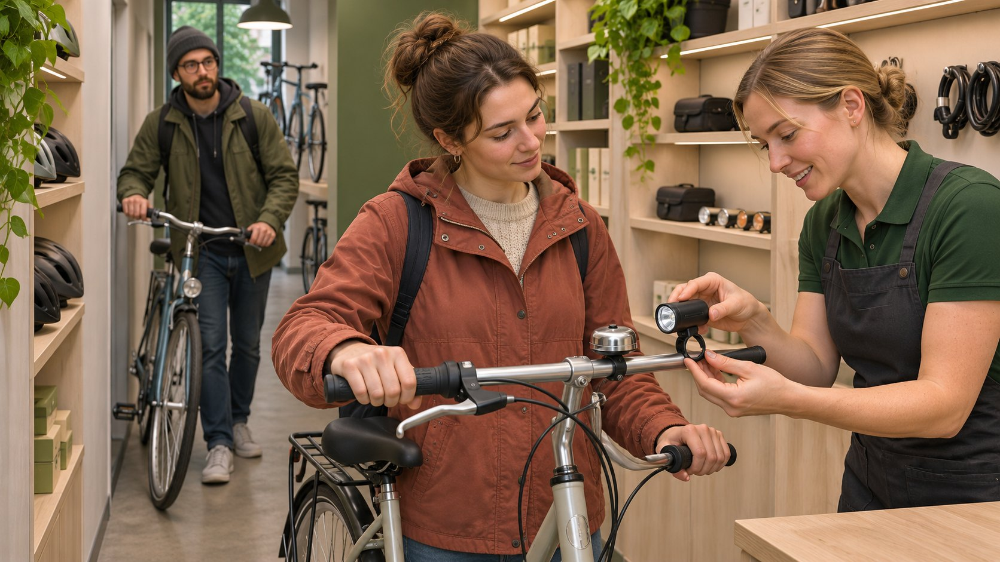

Handlungssituation · Global Bike Deutschland GmbH
Handlungssituation
Materialzugriff
Im 2-Rad Center Block in Aurich bringen viele Kunden ihr Fahrrad mit. So kann das Team direkt am Rad zeigen, ob ein Licht oder ein Schloss passt. Für eine Frühjahrsaktion bekommt das Fachgeschäft Zubehör von Global Bike.
Heute sind Sebastian Wolf und Christian Klein von Global Bike zu Besuch. Sebastian ist im Außendienst und hält Kontakt zu den Läden. Christian kümmert sich darum, dass die Ware dort ankommt. Mit Block haben sie schon geklärt, welche Artikel zur Aktion gehören. Für den Aufbau hat die Ladenleitung zwei Rollregale und einen schmalen Tisch reserviert. Morgen Vormittag will sie den Aufbau testen.


Eine Kundin schiebt ihr Rad in den Laden. Sie möchte sehen, wie die Halterung eines Lichts am Lenker sitzt. Die Verkäuferin bringt ihr das Muster. Gerade in diesem Moment kommt ein zweiter Kunde mit seinem Fahrrad durch denselben Bereich. Beide halten an. Sebastian möchte mehr Platz einplanen, damit das Personal Zubehör am Rad zeigen kann. Christian tippt auf den Ladenplan. „Wenn wir zu viel Platz am Tisch brauchen, kommt das Personal bei der Beratung schlecht an die verpackte Ware heran.“
Die Ladenleitung schaut auf die beiden Räder im Gang. „Am Samstag passiert das mehrmals am Vormittag. Wo können wir etwas am Rad zeigen? Wie kommen alle dabei vorbei?“ Für die Probe braucht sie euren Plan. Er soll zeigen, wie das Personal etwas vorführen und gleichzeitig die Ware erreichen kann. Die Wege sollen dabei frei bleiben.